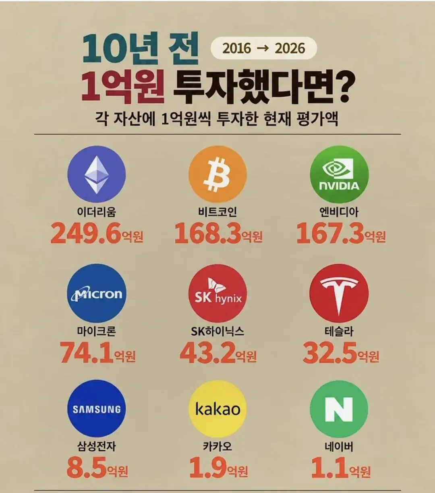

10년전에 네이버에 1억을 투자했다면?
댓글
사실상 은행궝
와! 천만원
인플레이션 생각하면 걍 마이너스지ㅋㅋㅋㅋㅋ
비트코인 박았다가 중간에 엔비디아-하닉으로 갈아탔으면 오백억 넘었겠다
그치 2015년에 비틐코인 100만원일때 100만원어치 사고 2020년에 1억찍을때 팔고 그걸로 엔비디아 22년에 사서 25년 중순에 팔면 10배고 그걸로하이닉스 15만원에 사서 300층에 팔았으면 20배였을테니 100만원으로 300억벌수있음
오백억이 아니라 1억박아서 적시에 사고팔면 3조를벌었음 ㅇㅇ;
ㄷㄷ 이 돈으로 로또에 다 당첨 됐으면 그게 얼마야
엔비 하닉 박았다 비트 수익률보고 고점들어감 천만원 남음
이더가시발 4000달러까지오르다 지금 떨어진건데 떨어진걸로도 249억이라니
이래서 미장에 투자하라는거구나..
정 직.
캬 믿고 있었다구
성실한 노동 독려는? 대 이 버
국장병신
이더리움 저래 번사람 출금은 됐을까
이렇게나 올랐는데 주식이나 코인 한 사람들중 망한사람 없겠지?
개이버가 망한이유
1. 고객센터 상담사 연결이 거의 0.5 에 가까움
2. ㅂㅅ같은 광고를 넘어선 ㄷㅅ같은 대문짝만한 광고
결론: 고위 임원중에 386하던 ㄱ찐따 ㅆ꼰대 천룡인 있을 확률 99.9프로임
그런것보다 네이버라는 기업 자체가
독자적인 신기술로 제품을 만들어서 파는것도 아니고
내수 시장에서 유명한걸로 유명한 광고 쌀먹 기업이라
빈약한 내수시장 특성상 성장한계 뚜렷한게 주가에
그대로 나타날 뿐임
만약 내수 빵빵한 중국이나 미국에서 이정도 입지였으면
슨피 들어갔을걸
ㅇㅇ 그냥 네이버 자체가 전부 거대한 광고판임. 포털, 쇼핑, 블로그 전부
네이버가 망했다고? 망한 건 물린 사람들이겠지
??? : 내가망했다고? 니들이 망한거지ㅋㅋㅋ
앞으로 더 망할거라고 ㅋㅋ
시발 들고 있는 거 보니까
네이버는 -14%고
엔비디아는 810%네
연간 100씩은 벌었으니까 주식한다고 깝치는 대다수보단 잘벌었다고 본다
네이버 5년전에 사서 아직도 씨게 물려있다 시발
비트보다 이더가 더 높네?
됐고 하닉 250 언제옴
ㅎㅎㅎ 천만원 벌었네
카카오는 10년 전에 상장도 안하지 않았나?
삼성 1만원시절 안삼..
엔비디아 10달러 시절 삿다가 30달러에 팜...
비트코인 2012년도 내 체크카드가 비자가 아니라서 못삿음..(군입대전이라 기억남)
이더리움 1만원일때사서 10만원에 팜..
당시엔 돈도 없었고요. 흑흑..
지금도 없네요 흑흑
나도 진짜 한번만 선택 잘했으면 워뇨띠만큼은 아니어도 많이 벌었을건데..
코인붐에 200만원으로 9800만원까지 불렸는데
이거 당시에 잘 분산해서 넣고 박상기의 난때 잘빼서 킵하는 선택만 잘했으면...
다시 붐올때 비트랑 이더 잘나눠넣고 부자됐을텐데
캬
더이상은 네이버